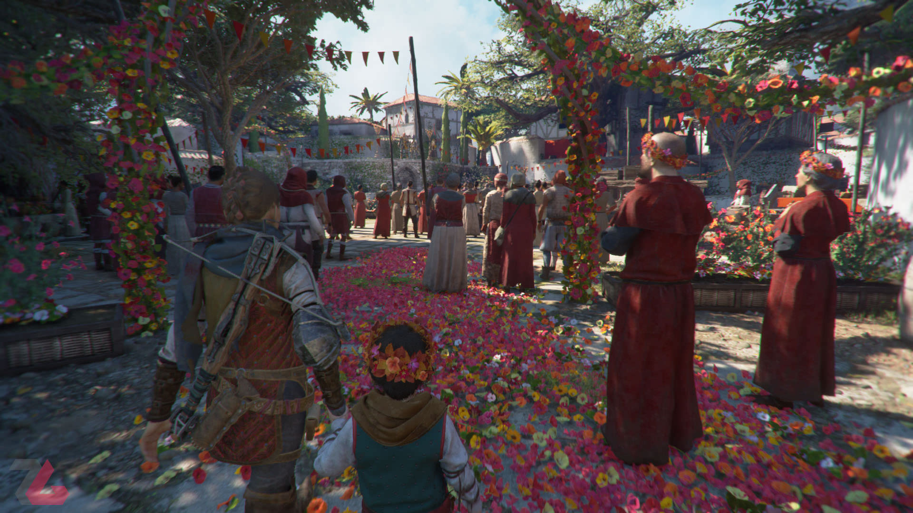
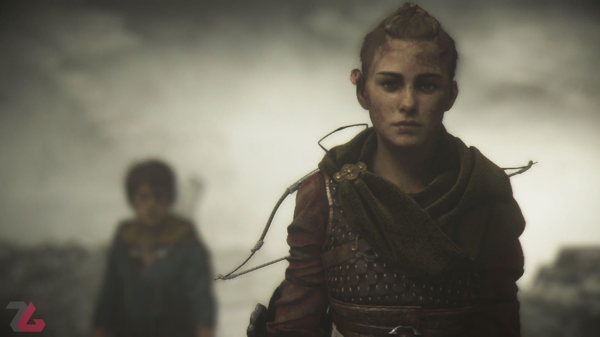
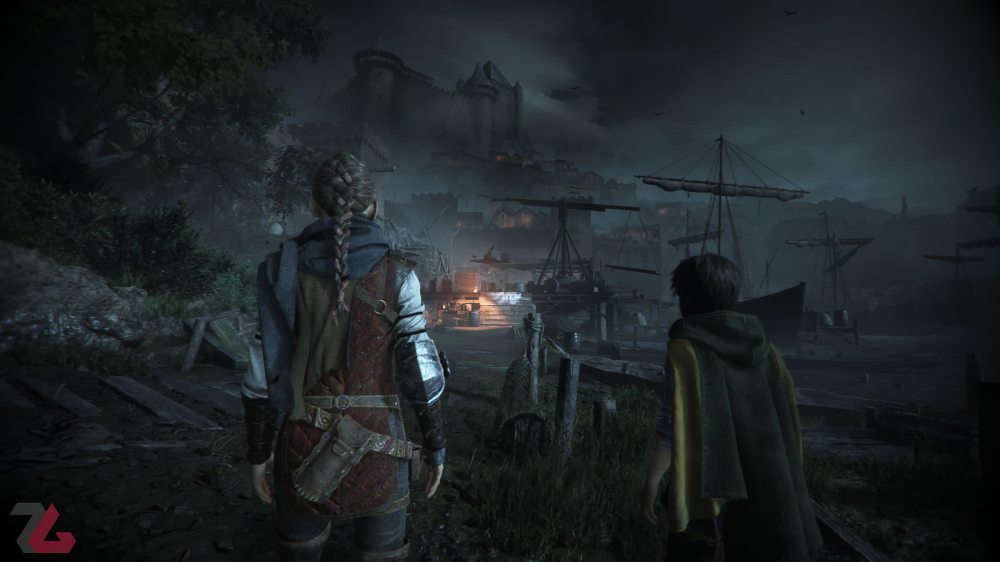
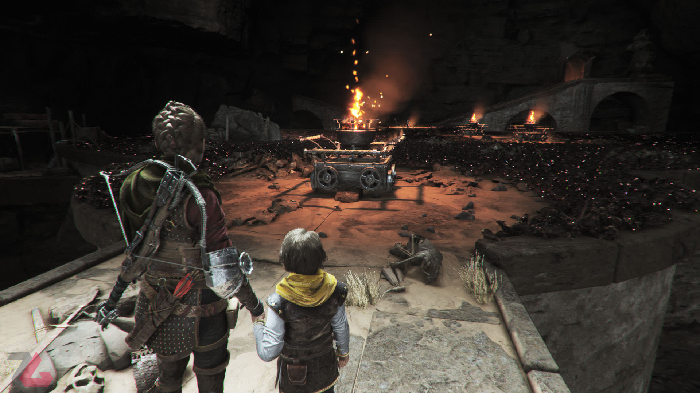
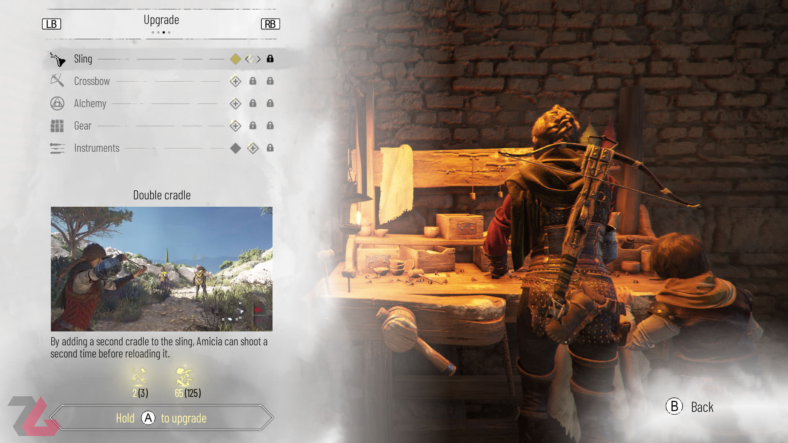
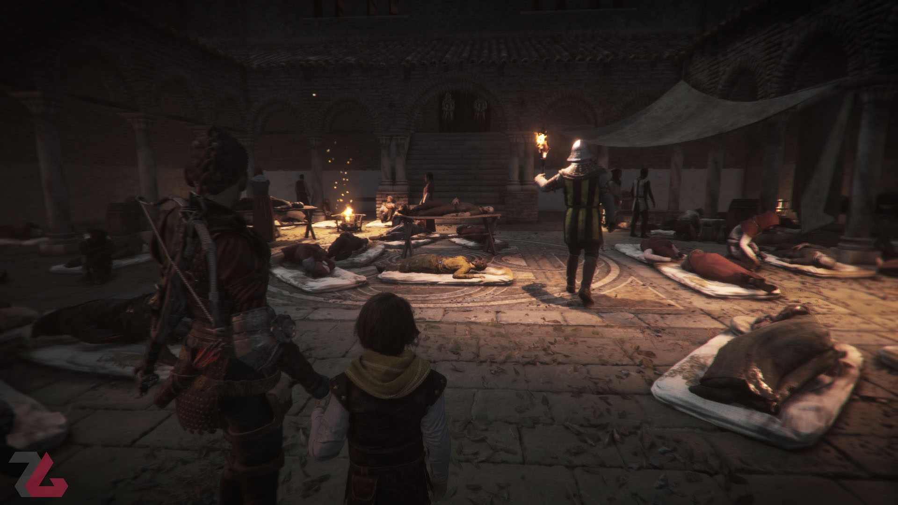
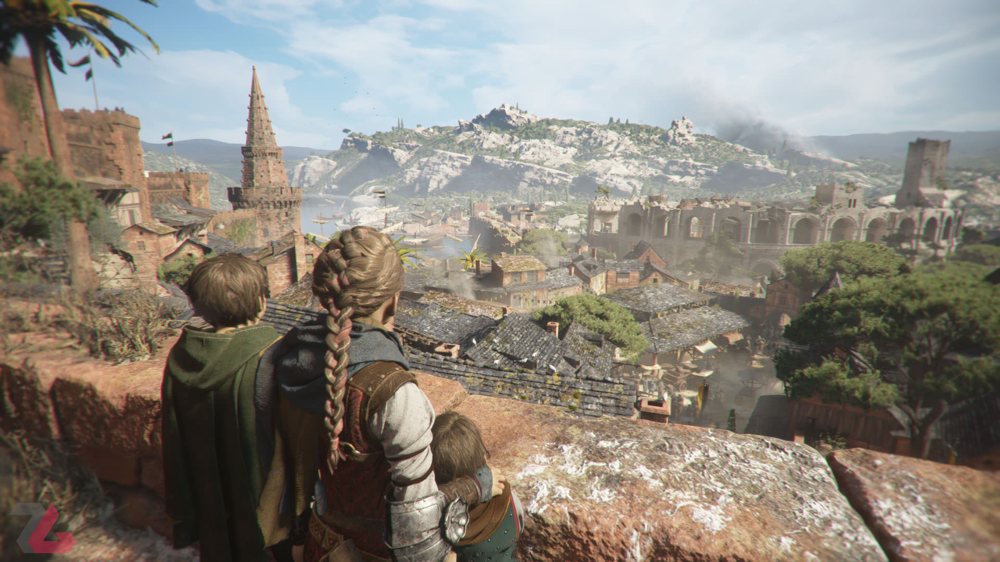

A Plague Tale: Requiem دنبالهای است بزرگتر، تأثیرگذارتر و تقریبا از هر نظر بهتر از نسخه قبل که یکی از آثار ارزشمند امسال بهحساب میآید. همراه بررسی بازی باشید.
نسخه اول مجموعه A Plague Tale در سال ۲۰۱۹ منتشر شد و روایتگر ماجراهای خواهر و برادری به اسم آمیسیا و هیوگو بود که در جهانی طاعونزده و بیرحم، دنبال درمانی برای بیماری عجیب هیوگو بودند و در عین حال باید مراقب موشها، نیروهای تفتیش عقاید و خطرهای دیگر هم بودند. بازی مورد استقبال نسبتا خوبی قرار گرفت و با اینکه ضعفهای واضحی هم داشت، در مجموع اثری دوستداشتنی بهحساب میآمد. حالا مدتی است که دنباله این بازی با نام A Plague Tale: Requiem منتشر شده و استودیو Asobo سعی کرده تا تجربهای بهمراتب بهتر و کاملتر را در این نسخه ارائه دهد. اما آیا در این راه موفق هم بوده است؟
از همان اولین دقایق شروع بازی A Plague Tale: Requiem، با دیدن کیفیت بصری بالای آن و همینطور مقدمهچینی داستانیاش، میتوان متوجه شد که قرار است با تجربهای بهمراتب پرجزییاتتر از نسخه قبلی روبهرو باشیم و به مرور، به این یقین میرسیم که این جزییات و گستردگی بیشتر، در تمام جنبههای شکلدهنده بازی کاملا حس میشود. بحث داستان هم از این قاعده مستثنی نیست؛ روند بازی چند ماه پس از وقایع نسخه اول آغاز میشود و شاهد هستیم که آمیسیا و هیوگو، به همراه لوکاس مشغول بازی و تفریح هستند تا اینکه پای دو شخصیت اصلی بازی، به قلعهای باز میشود و اتفاقهای ناخوشایندی را در آنجا تجربه میکنند. پس از این اتفاق، شخصیتهای بازی راهی منطقهای به نام Provence میشوند که امیدوارند در آنجا راهی برای درمان بیماری هیوگو پیدا کنند. بااینحال وضعیت مطابق انتظار آنها پیش نمیرود و ظاهر شدن دوباره موشها و همینطور تهدیدهایی از طرف انسانها، آمیسیا و هیوگو رو وادار میکند تا برای پیدا کردن درمان، سفری خطرناک را آغاز کنند.
استودیو Asobo، بهوضوح سعی کرده تا دید گستردهتری نسبت به داستان در A Plague Tale: Requiem داشته باشد. به این معنی که هنوز هم ماجرای اصلی، تلاشهای خواهر و برادر قصه است اما این وسط شاهد خرده رخدادهای زیادی هم هستیم که در نتیجه آنها، داستان بازی بهمراتب پرجزییاتتر، پیچیدهتر و صد البته جذابتر از نسخه قبلی شده است و مهمتر از چنین مقایسهای، این واقعیت است که بهطور کلی، بازی روایت واقعا دلنشینی دارد و عوامل مختلفی دست بهدست هم دادهاند تا شاهد تجربه داستانی شیرینی باشیم. یکی از این عوامل، حضور شخصیتهای مختلف، هرکدام با پیچیدگیهای خاص خودشان در بازی است. در بازی شاهد کاراکترهای مختلفی هستیم که هرکدام در مقطعی از آن درکنار یا مقابل شخصیتهای اصلی قرار میگیرند و یکی از ویژگیهای مثبت راجع به آنها، پیچیدگی رفتار و خصوصیات اخلاقیشان است که باعث شده تا مرزبندی سیاه و سفید در بازی محوتر از روایتهای کلیشهای باشد و به همین ترتیب، برخی اتفاقهای بازی با محوریت این کاراکترها هم غیرقابل پیشبینی شود که تاثیرگذاری آنها را بیشتر میکند. در واقع تیم نویسندگان بازی، خیلی خوب توجیههای منطقی برای اعمال کاراکترها در نظر گرفته و از این طریق از آنها شخصیتهایی قابلباور میسازد که باعث ارتباط بهتر مخاطب با آنها میشود.
از تاثیرگذاری صحبت کردیم و خب باید به این نکته بپردازیم که با تمام این اوصاف، هنوز هم برگ برنده اصلی روایت A Plague Tale: Requiem، چگونگی بهتصویر کشیدن رابطه و علاقه خاص خواهر و برادری بین هیوگو و آمیسیا است. واقعیت این است که وقتی با اثری طرف هستیم که داستانی احساسی و عاطفی تعریف میکند، همهچیز برای آن اثر بهنوعی حکم راه رفتن روی لبه یک تیغ را دارد؛ چرا که اندکی اغراق، باعث خواهد شد تا احساسات بهتصویر کشیدهشده، حالتی لوس و بیش از حد غیرواقعی پیدا کنند که باعث دلزدگی مخاطب میشود. اما اگر نظر من را بخواهید، Requiem این جنبه از کار را خیلی خوب و هوشمندانه رعایت و لحاظ کرده است. خصوصیات رفتاری انفرادی دو شخصیت اصلی بازی، مثل معصومیت خاص هیوگو و شجاعت آمیسیا که از علاقه او نسبت به برادرش نشات میگیرد و گاهی هم بهلطف دیالوگنویسی هوشمندانه بازی شاهد هستیم که چقدر برای حفظ آن در تلاش و جنگیدن با ترسهایش است، از یک طرف و اصطلاحا شیمی خاص بین دو کاراکتر که از علاقه متقابل آنها به هم ناشی میشود، باعث شده تا رابطه این دو شخصیت، برگ برنده اصلی داستان بازی باشد.
به بیان دیگر، ارتباط آمیسیا و هیوگو انقدر با ظرافتهای دوستداشتنی روایت و خلق شده که در نتیجه آنها، اتفاقهایی که برایشان رخ میدهد و یک سری پیچشهای بسیار خوب داستانی بازی، تاثیر زیادی روی مخاطب میگذارد و حتی ممکن است پس از تمام کردن Requiem، برای مدتی ذهنتان تحت تاثیر وقایع آن باشد. بهطور کلی، داستان A Plague Tale: Requiem بهشکلی است که انگار چرخدندههای مختلف آن به شکلی بسیار خوب و هماهنگ باهم کار میکنند و نتیجه این اتفاق، داستانی احساسی، دوستداشتنی و ارزشمند با محوریت ارتباط احساسی بین شخصیتهای آمیسیا و هیوگو است که البته برخی دقایق زاید و اضافی هم دارد ولی کلیت ماجرا آنقدر دوستداشتنی است که بتوانیم این از ریتم افتادنهای بازی در دقایق معدود را هم تقریبا نادیده بگیریم. البته برای رسیدن داستان به این سطح از تاثیرگذاری و کیفیت، نباید از نقش اتمسفرسازی درست بازی هم غافلم شویم؛ A Plague Tale: Requiem از نظر بصری و صوتی واقعا زیبا است و مهمتر از چشمنواز بودن، این است که این جنبهها کاملا مناسب فضای کلی بازی طراحی شدهاند. تصاویر و موسیقی خیلی خوب در خدمت روایت کلی قرار میگیرند و احساسات و تنشهای بازی، بهلطف این ویژگیها بهمراتب بهتر به مخاطب منتقل میشوند.
با اینکه داستان در کل اهمیت خیلی زیادی در A Plague Tale: Requiem دارد، ولی برخلاف نسخه قبلی که گیمپلی آن پس از مدتی درگیر یکنواختی میشد، این بار سازندگان سعی کردهاند تا ساختهشان از این نظر هم حرفهایی برای گفتن داشته باشد. برای این منظور، آمیسیا از آن کاراکتر تقریبا بیدفاع نسخه قبل به مبارزی پختهتر در Requiem تبدیل شده است؛ مبارزی که تجهیزات بیشتری دارد و میتواند با هدف قرار دادن دشمنان با سنگ یا تیرکمان و همینطور با استفاده از مخفیکاری، آنها را از بین ببرد. البته باوجود قویتر شدن آمیسیا در این زمینهها، Requiem اصلا و ابدا یک تجربه اکشن نیست که در آن بتوانید با در دست گرفتن هر نوع سلاحی، مشغول کشت و کشتار شوید. محدودیتهایی مثل نداشتن تیر زیاد برای تیرکمان که اصلیترین سلاح کشنده بازی است یا ناکارامد بودن پرتاب سنگ دربرابر دشمنانی که زره و کلاهخود قوی دارند، باعث میشود تا بار اصلی گیمپلی بازی بر دوش مخفیکاری باشد و خیلی وقتها باید با خزیدن از میان بوتهها و عبور بی سروصدا از بین دشمنان، راهتان را پیدا کنید. چنین تعادلی از این نظر هم اهمیت دارد که باعث میشود تا آن ترس ناشی از حسِ ضعف کاراکترهای بازی دربرابر تهدیدهای جهان پیشِرو، وجود داشته باشد و همین هم تنش کلی را افزایش میدهد. روند کلی A Plague Tale: Requiem، فقط هم محدود به مبارزهها و تقابل با دشمنان نیست. درست مثل نسخه قبل، در این بازی هم موشها تاثیر خیلی زیادی در جریان کلی دارند و حتی مقایس و وسعت حضور آنها هم افزایش وحشتناکی داشته که مخصوصا در برخی قسمتها، باعث غلبه حس ترسی واقعی به بازی هم میشود. برای عبور از میان این موجودات، کماکان وابسته به عناصری چون آتش هستید که خب به روشهای مختلفی در دسترس است و بهنوعی باید با حل پازلها و اتخاذ بهترین تصمیم ممکن، راهی برای عبور از موانع و موشها پیدا کنید. دراینمیان بخش کیمیاگری بازی نقش مهمی ایفا میکند؛ آمیسیا با استفاده از موادی که پیدا میکند، امکان ساخت آیتمهایی را دارد که مثلا باعث شعلهور شدن اشیا محیطی، خاموش شدن آتش، تشدید شدت آن و اتفاقهای دیگر میشوند و خب از اینجا به بعد، بازی این آزادیعمل را به بازیکن میدهد تا به شکلی که میخواهد، از این آیتمها برای حل پازلها یا حتی ازبینبردن دشمنان استفاده کند.
پازلهای رایج دیگری که برای حل برخی از آنها باید از سایر کاراکترها هم کمک بگیرید و همینطور وجود امکان ارتقای تجهیزات که با پیدا کردن منابع مخصوص قابل انجام است، از دیگر ویژگیهای روند A Plague Tale: Requiem بهحساب میآیند. البته این وسط مهارتهای خود آمیسیا هم قابلارتقا است که برای این منظور مثلا اگر بازی را بیشتر به شیوه مخفیکاری پیش ببرید، مهارتهای کاراکتر در این زمینه ارتقا پیدا میکند و به بیان دیگر، سیستم کلی ارتقا بهشکل خودکار و وابسته به سبک بازی شما است. در مجموع، گیمپلی نسخه قبلی A Plague Tale درگیر برخی محدودیتها بود که باعث میشد پس از مدتی تجربه کلی آن یکنواخت شود و تیم سازنده باتوجهبه این موضوع، در Requiem موفق شده تنوع بیشتری به روند کلی بازی بدهد. تعادل خیلی خوب بین اکشنها و مخفیکاری و آزادیعمل مناسبی که در حل پازلها یا رویارویی با موشها شاهد هستیم، باعث شدهاند تا گیمپلی پویاتری داشته باشیم. همچنین گاهی هم بازی مخاطب را در سناریوهایی مثل فرار از دست حمله موشها یا قسمتهای کاملا اکشن قرار میدهد که این بخشها هم تنش واقعا بالایی دارند. البته درکنار تمام این ویژگیهای مثبت، Requiem گاهی دچار باگ هم میشود و بهدلیل کار نکردن مکانیکهای لازم برای پشت سر گذاشتن آن قسمت از بازی، مجبور خواهید شد تا چکپوینت یا حتی آن قسمت را بهطور کامل دوباره تجربه کنید.
پیشتر هم به اتمسفر عالی و زیباییهای صوتی و بصری بازی اشاره کردیم و بد نیست این ویژگی را هم یادآور شویم که درکنار تمام جنبههای دیگر، A Plague Tale: Requiem جهان بسیار گستردهتری هم نسبت به نسخه قبلی دارد. به این صورت که ماجراجویی شخصیتهای بازی، ما را به مکانهایی مختلف، هرکدام با حال و هوا و اتمسفر خاص خودش میبرد و از محیطهای تاریک شهری که وحشت ناشی از خیزش موشها بر آن غلبه کرده تا دشتهای وسیع و سرسبز را شاهد هستیم. جدا از اینکه این مناطق هرکدام با جزییات بصری واقعا بالایی طراحی شدهاند، بازی حتی این امکان را هم فراهم کرده تا گاهی در آنها بیخیال مسیر اصلی داستانی شوید و با گشتوگذار در محیط و گاهی هم حل پازلهایی محیطی، آیتمهایی مخفی بهدست بیاورید. برای نوشتن این بررسی، هم نسخه پی سی و هم ایکس باکس سری اس بازی تجربه شده که کیفیت بصری Requiem در هر دو نسخه واقعا بالا است ولی در نسخه ایکس باکس، گاهی شاهد افت فریمهایی محسوس در محیطهای شلوغ، مخصوصا زمانیکه تعداد بالایی از موشها حضور داشته باشند، هستیم.
A Plague Tale: Requiem در مجموع هم پیشرفتی بسیار خوب در مقایسه با نسخه قبل بهحساب میآید و هم کلا برای آنهایی که اصلا نسخه قبلی را هم تجربه نکردهاند، یک بازی بسیار ارزشمند است. داستان تأثیرگذار و احساسی بازی بهلطف دیالوگنویسی قدرتمند آن، شخصیتپردازی بسیار مناسب کاراکترها و دقت به جزییات ریزی که مانع از اغراق احساسی آزاردهنده میشوند، حسابی مخاطب را درگیر میکند و این وسط گیمپلی هم آنقدر جذابیت دارد که تجربه تقریبا ۲۰ ساعته بازی سرگرمکننده و جذاب باقی بماند. Requiem ازطریق سرویس گیم پس هم در دسترس است و همین موضوع ارزش تجربه آن را برای کاربران این سرویس بالاتر میبرد ولی حتی اگر مشترک گیمپس هم نیستید، پیشنهاد میکنم تجربه این بازی را از دست ندهید که قطعا یکی از آثار خوب امسال است.